Skyline 靶向蛋白质组环境以视觉呈现的方式为您显示导入 的Skyline 文档的原始质谱数据。您可以对这些数据进行处理，调整您在测量的肽段和离子对，也可以调整整合边界。您可以将 Skyline 文档中各种各样的计算值和统计数据导出为表格形式的逗号分隔值 (CSV) 文件，从而在 Excel 和 R 等工具中进一步分析。您可以从 Skyline 结果和文档网格获取其中许多值，并在处理数据时编辑自定义注释和原生属性。
本教程的第一部分将重点介绍 Skyline 自定义报告。您将了解如何设计、共享、使用自定义报告，以便从您的 Skyline 文档中导出原始值和汇总统计数据。所导出的报告有以下用途：
在开发 Skyline 的过程中，我们旨在创建一个针对靶向质谱调查的供应方中立的平台。对于来自Agilent、Bruker、SCIEX、Shimadzu、Thermo-Scientific 和 Waters 仪器的数据，Skyline 都可以导出类似的自定义报告。跨仪器平台创建一致报告的能力极大地便利了不同仪器比较和大型多中心研究。
要了解如何根据自己的实验创建自定义报告至关重要，本篇 Skyline 自定义报告教程中对此进行了详细介绍。
本教程的第二部分将重点介绍 Skyline 中的结果和文档网格视图，这些视图提供了对自定义报告中许多可用数据的实时访问。您将学习如何在结果和文档网格中自定义列，以便在 Skyline 中检查和调整质谱仪输出时直接访问重要的值。您还将学习如何使用自定义注释来对相关词汇表做出进一步解释，这些自定义注释可以与自定义报告一起导出。
开始本教程之前，请下载下列 ZIP 文件：
https://skyline.ms/tutorials/CustomReports.zip
将其中的文件解压到您的电脑文件夹，如：
C:\Users\brendanx\Documents
这将创建一个新文件夹：
C:\Users\brendanx\Documents\CustomReports
现在通过双击新文件夹中的 Study7_example.sky 来打开这个文件，或使用一个正在运行的 Skyline 实例中的文件菜单上的打开命令。
Study7_example.sky 中的数据集属于癌症临床蛋白质组学技术评估 (CPTAC) 协会开展的一项研究（T.Addona 等人所著的“基于多反应监测的血浆蛋白测量的多位点准确性和可再现性评估”，Nature Biotechnology，2009，27，633 - 641）。这项研究描述了在不同浓度分析物肽段的标准曲线及其相应的同位素标记内标水平的恒定尖峰。
Skyline 文件显示了在一个 CPTAC 位点采集的 CPTAC Study 7.2 数据（在论文中称为“Study II”）的子集数据。Skyline 文件显示了 10 种不同肽段序列的LC-MRM-MS数据，分析物蛋白质（轻肽）的浓度范围为 500 fmol 至 2.92 fmol（重复测定 J：500 fmol；I：275 fmol；H：151 fmol；G：83 fmol；F：46 fmol；E：25 fmol；以及 D：8.55 fmol - 尽管也采集了较低浓度的点，但并未纳入本教程）。内标 (IS) 重肽各以 50 fmol 的浓度掺入。
要想初步了解该数据集，请执行以下步骤：
随即出现一个新窗口，其中显示每个重复测定的峰面积条形图。蓝色条表示肽段的重标版本（总是在 50 fmol 的浓度下掺入)，红色条表示不同浓度下的轻标分析物（每个浓度点进行了四次技术重复测定）。
其他教程介绍如何查看和编辑这样的文档。但在本教程中，Study7_example.sky 文档已获得初步整合审查，为导出报告和在更深入的统计分析中使用做好了充分准备。在继续学习本教程的其余部分之前：
要创建第一个 Skyline 自定义报告模板，请执行以下步骤：
随即出现导出报告表单，其中可能至少列出 Skyline 默认报告模板，如下所示：
执行以下步骤，继续创建新的 Skyline 自定义报告模板：
此时，表单将显示如下：

此时，表单将显示如下：

请注意，上面显示的编辑报告表单中的字段有不同的层次结构。位于最高层级的是显示在左侧框底部的蛋白质专用字段（蛋白质名称、蛋白质描述、蛋白质序列、蛋白质注释），在这些字段下面的是展开的重复测定组，其中包含一般的重复测定名称字段和其他字段。Skyline 自定义报告还提供肽段专用字段，这些字段位于左侧框顶部展开的肽段组中，如肽段序列和平均测量保留时间等。肽段专用字段包括肽段结果组（尚未展开）。同样未展开的还有母离子组（其中包含母离子专用字段）、母离子结果组以及离子对字段组。离子对组中又包含离子对专用字段以及相应的离子对结果组，其中包含最详细的结果值，如保留时间、半峰宽、启动时间、结束时间、面积和背景，许多更高级的结果字段值都是从这些值派生而来。
在“编辑报告”表单中执行以下步骤，继续向第一个自定义报告模板中添加内容：
执行此操作后，编辑报告表单应显示如下：

此时预览表单将显示如下：

在设计报告模板时，预览功能相当有用。有时甚至可以使用预览功能来快捷地将报告导出到文件。工具栏上的复制按钮（ ）将复制包括列标题在内的所有数据。您还可以单击列标题左侧左上角的矩形来选择预览表单中的所有值。按 Ctrl-C 复制完整报告（不包括列标题）。使用其中一种方法复制数据后，即可将数据粘贴到 Excel
等其他工具中。
）将复制包括列标题在内的所有数据。您还可以单击列标题左侧左上角的矩形来选择预览表单中的所有值。按 Ctrl-C 复制完整报告（不包括列标题）。使用其中一种方法复制数据后，即可将数据粘贴到 Excel
等其他工具中。
上面显示的是重复测定 7_2_D_01 和 7_2_D_02 的报告预览，其中右侧列中显示了所有 LC-MRM-MS 采集/实验中这 10 种肽段（轻肽和重肽形式）的最佳保留时间和总面积。向右滚动查看全部 28 次 LC-MRM-MS 采集的列。单击预览表单右上角的正方形以最大化预览表单，查看更多的列。在本例中，7_2_D_01 和 7_2_D_02 取自具有相同轻标分析物浓度的样品。因此，预计总面积值将类似。 从 D 到 J 的每个字母表示不同的轻标分析物浓度。每种浓度均进行四次技术重复测定，用数字 01 - 04 表示。在所有样品中，重肽浓度一直保持在 50 fmol。
单击右上角的“X”关闭预览表单，再次返回编辑报告表单。要保存报告模板，请执行以下操作：
您会看到新的 Overview 报告模板出现在报告模板列表中，如下所示：

现在，新的 Overview 报告模板已添加到 Skyline 报告模板列表中。此时导出报告表单将显示如下：

在导出报告表单中，可以在报告列表中选择“Overview”后单击导出按钮来导出新报告。现在关闭表单，以便从原始的 Skyline 文档视图开始处理。
要将您在上面创建和预览的报告导出为 CSV 文件，请执行以下操作：
如果切换到 Windows 文件资源管理器窗口，显示为本教程创建的 CustomReports 文件夹，会看到刚刚创建的 Overview_Study7_example.csv 文件。现在用 Excel 打开此文件，确认其中的内容是否与您先前显示的预览非常相似。请注意，该文件包含列标题名称，简单地从预览表单中进行复制粘贴是无法获得这些名称的。
Skyline 中的报告模板非常灵活，易于管理和修改，并且可以与协作者共享。
您可能出于许多原因而想要共享自定义报告模板，无论是参与大型多实验室研究还是只与某个协作者合作，无论是向蛋白质组学社区提供您自己自定义的与 Skyline 文档中特定字段有关的工具，还是为文章提供补充信息以便其他人复制您的协议，都可以共享自定义模板。Skyline 支持多个供应商的仪器，这意味着可以使用共享的报告模板来从多个使用不同仪器的中心收集数据。
要共享您在本教程中创建的 Skyline 报告模板，请执行以下步骤：
Skyline 将显示管理报告表单，如下所示：

报告模板将保存到为本教程创建的 CustomReports 文件夹下的“Overview.skyr”文件中。您现在可以与协作者分享，用自己的分析工具进行分析或作为文章的补充数据。
要了解其他人如何使用您共享的自定义报告模板，首先要将其从系统中删除。然后可以使用上一节中创建的共享报告文件“Overview.skyr”将其添加回来，就好比您是从其他人那里获得了这个共享模板一样。
在执行上一节中的步骤后，导出报告表单应仍处于打开状态。要从 Skyline 设置中删除“Overview”报告模板，请执行以下操作：
此时，管理报告表单将显示如下：

要从列表中删除“Overview”项目，请执行以下操作：
此时导出报告表单将显示如下：
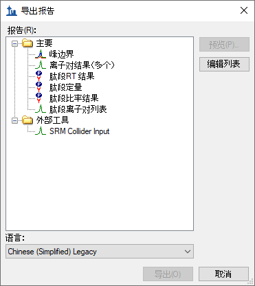
看起来和您第一次在本教程中打开时一样。
要演示您的协作者如何将新报告模板导入 Skyline，请执行以下步骤：
执行这些操作后，“Overview”项目将重新添加到导出报告表单中的报告列表。要验证这是否确实是您保存的报告，请执行以下步骤：
Skyline 将呈现预览表单，其中包含您在本教程前面看到的相同值。
当然，相比简单的“Overview”报告，您也可以创建数据更为丰富的报告。您可以另外创建一个新的报告模板，编辑现有的“Overview”报告，或者如下所示在复制“Overview”报告后编辑副本来完成这项操作。要从“Overview”报告模板的副本创建更为复杂的新报告，请执行以下步骤：
Skyline 将显示编辑报告表单，其中包含已添加的“Overview”报告模板，如下所示：
这个新报告模板的报告名称尚未指定。要立即指定名称，请执行以下操作：
单击每个字段旁边的复选框，将其添加到编辑报告表单右侧报告模板的列列表中，继续按如下所述添加更多字段：
报告模板现在应包含比初始“Overview”报告模板更多的细节，编辑报告表单应如下所示：
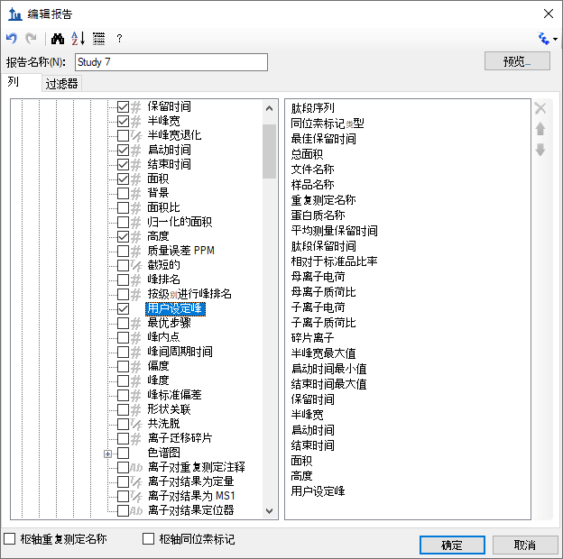
要对这个新报告模板中的某些字段重新排序，请执行以下操作：
您可以使用最右侧的向上和向下箭头按钮进行最适合您的排序，也可以使用箭头按钮上方的红色“X”按钮删除可能误添加的字段，或者取消选中左侧列表中的字段。但在本教程中，我们不对列列表进行任何进一步更改，而是继续后续操作。
要预览已创建的报告模板中当前文档的值，请执行以下操作：
对于这样的数据，其中每个肽段既有轻分析物，也有匹配的重同位素标记的内标，在单独一行中处理成对的母离子的数据可能会更方便，更容易比较匹配的离子对值。
要对“Study 7”报告模板做出这项更改，请执行以下操作：
匹配的轻离子对和重离子对的所有值都已添加到同一行。为此添加了新列，同位素标记类型特有的列具有前缀“Light”和“Heavy”。
预览表单如下所示，滚动显示“Light”和“Heavy”列名：
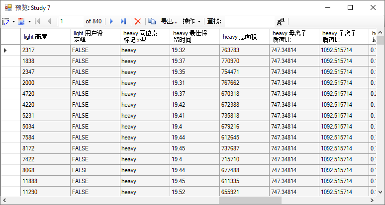
您可能会注意到，“heavy 同位素标记类型”在每行显示“heavy”，“light 同位素标记类型”在每行显示“light”。当您在一个列上转动时，不会添加多少内容来将它包含在您的列列表中。 关闭预览表单，并执行以下操作，从此报告中删除“同位素标记类型”字段：
您可以再次单击预览按钮，验证“light 同位素标记类型”和“heavy 同位素标记类型”列是否已被删除。不过，在本教程中的下一步是执行以下操作来保存您的工作：
您将返回到导出报告表单，该表单现在显示如下：
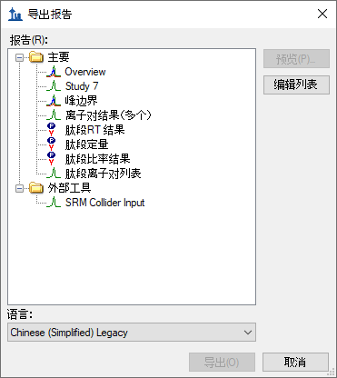
从这里可以选择“Study 7”报告并单击导出按钮，将它导出为 CSV 文件，或者单击共享按钮创建用于共享这份新报告的文件。但在本教程中将执行以下操作：
到目前为止，您已为Skyline 文档中指定的肽段和离子对的每个导入重复测定提供的值创建了报告。Skyline 还提供针对所有导入的重复测定进行的汇总统计的报告字段。这些汇总统计特别适合于质量控制以确保重复测定的QC 运行显示良好的可再现性和变异系数(CV)。所有重复测定中关键参数（如峰面积、半峰宽和保留时间）的平均值和变异系数可以在 Skyline 报告模板中体现。
本教程提供了一个您将导入 Skyline 的汇总报告模板，它也描述了如何在编辑报告表单中设计这样的汇总报告模板。
在开始前，请先执行以下操作打开新文档：
此文件包含两个 CPTAC 中心在运行 10 次 LC-MRM-MS 实验中采集的数据，在运行的5 次实验中都是以 50 fmol 的恒定浓度进样 22 个分析物肽段。这样的数据集可以用于评估重复进样测定的可重复性。在这部分教程中，您将开始使用实时报告在文档中导航。为此，要使用文档网格功能，而不是使用导出报告。
要查看关键质量控制指标的数据，请执行以下步骤：
名称为“Summary Statistics”的新报告应已添加到报告列表中，管理报告表单现在应如下所示：
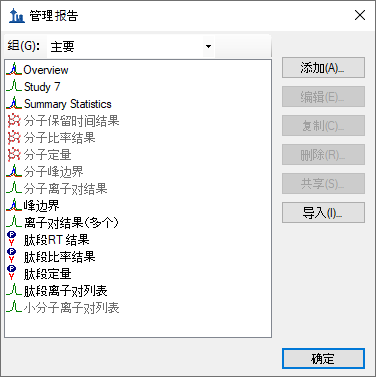
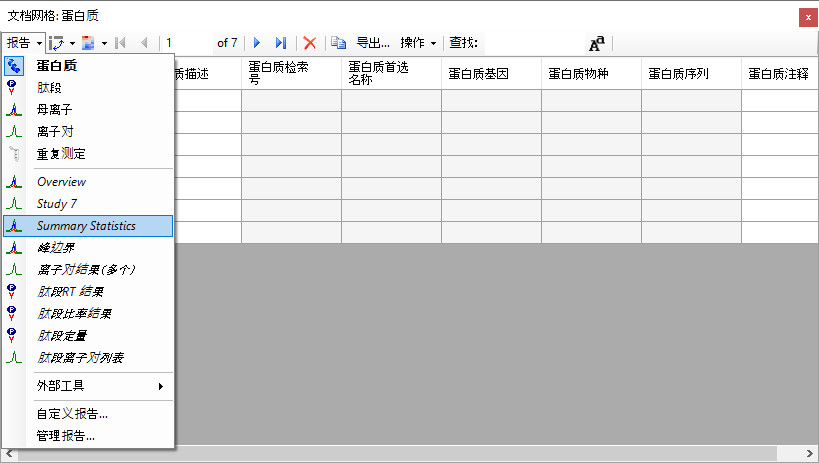
选择 Summary Statistics 后，文档网格应显示如下：
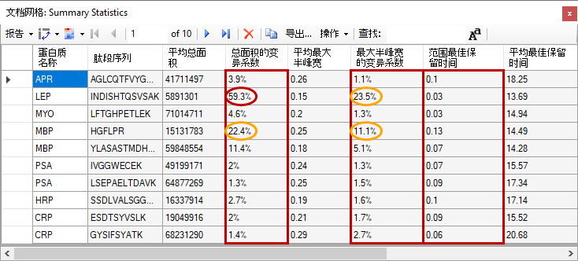
本报告表明，Study9pilot.sky 中的数据采集自同一样品的 5 次重复测定进样，所产生的半峰宽的肽段 CV 值大部分低于 5%，大多数情况下的总面积低于 10%，从红框中对应的列可以看出来。此外，标示范围最佳保留时间（红框）的列列出了 5 次重复测定进样中任何特定肽段的保留时间漂移（分钟）。在本例中只提供了最小保留时间漂移（小于 0.15 分钟，小于 10 秒）。
在质量控制问题影响到重要样品的数据之前，可以使用这些汇总报告及早标记质量控制问题。
在这个特定的数据集中，HPLC 和 MS 的表现尚可。不过有一种情况下，对于肽段 INDISHTQSVSAK（来自蛋白质 LEP），总面积的变异系数值为
59.2%，最大半峰宽的变异系数值为 23.5%（红色圈），显著不同于所有其他肽段的变异系数值。
通过执行以下操作，可以向报告中添加筛选器，以便仅显示符合特定条件的行：
自定义报告表单将显示如下：
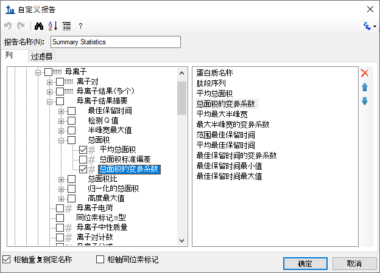
要在此报告上定义新过滤器，请执行以下操作：
自定义报告表单将显示如下：
请注意，即使总面积的变异系数列在文档网格中显示为百分比，但在过滤器选项卡上，数字“20%”仍表示为 0.2。

要更仔细地检查 INDISHTQSVSAK 肽段，请执行以下操作：
峰面积视图显示所有 5 个重复测定的总峰面积以及每个离子对的贡献，有助于阐明汇总报告预览的变异系数值中指出的问题。为进行比较，请选择其他几个肽段。峰面积视图将显示出更好的峰面积重复性，汇总报告预览中低得多的总面积的变异系数值也表明了这一点，其中大多数肽段的变异系数值小于 10%。
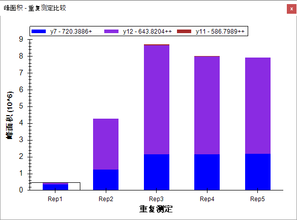
Skyline 汇总报告可以与质量控制数据结合使用，以便及早标出问题，同时 Skyline 本身也提供强大的可视化显示，有助于快速发现问题的根源。
在某些情况下，您可能希望在编辑数据时查看报告中显示的某些值，以便立即访问 Skyline 图中显示的原始值。在 Skyline 结果网格视图中，可以实时访问自定义报告中许多可用数据字段。在本教程的这一节中，您将学习如何使用结果网格即时获取重要的值，并在检查和调整 Skyline 中的质谱仪输出时对数据进行注释以获取重要见解。
要开始使用结果网格视图，请执行以下操作：
此时，Skyline 将显示如下：
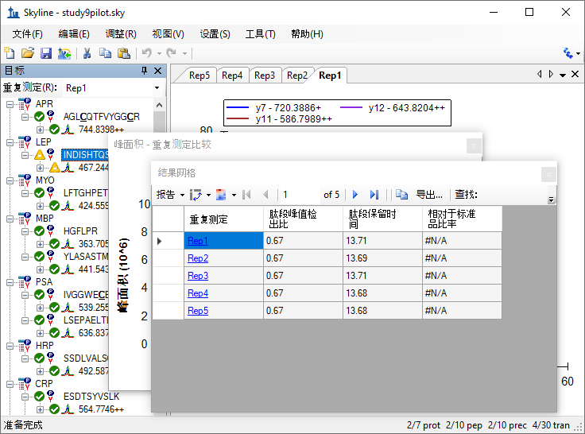
为便于查看，现在可以按如下方式重新排列窗口：
执行此操作后，Skyline 应显示如下：
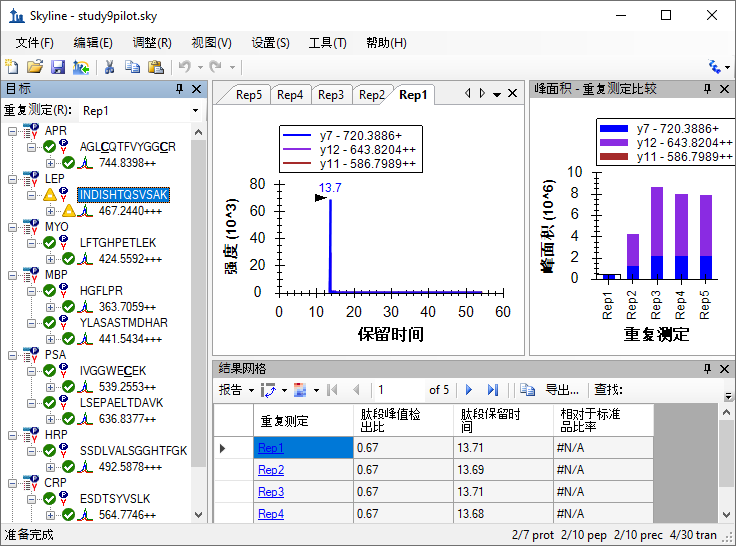
在您浏览数据时，Skyline 将保持图表与结果网格同步。如果单击结果网格中的另一行，Skyline 将变更当前色谱重复测定选项。它还会变更峰面积图中重复测定的选项（被选择矩形围绕的条形），以及目标视图顶部的重复测定列表的选项。
其他视图随之更新，包括结果网格中选定的行。
结果网格中重复测定列右侧的第一列是母离子重复测定注释。此列允许您将自由文本注释与所选母离子和重复测定的母离子结果字段组相关联。
结果网格现在应显示如下：
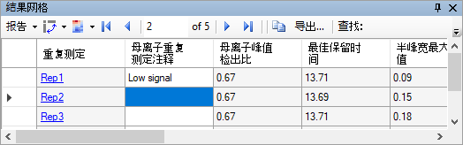
当前结果网格显示中的其他所有列均由 Skyline 进行计算，无法编辑，但可以更改显示的列和显示顺序。在上图中，有几个列被滚动到视图之外。要减少显示的母离子结果列数，请执行以下操作：
现在，您可以执行以下操作查看其他母离子的结果：
最后，展开一个母离子并检查它的离子对。您可以应用相同的方法自定义为离子对显示的列。但现在继续介绍本教程的最后一节，了解如何添加自定义注释。自定义注释可以通过结果网格进行控制，并且可以随后在 Skyline 报告中导出。
Skyline 支持三类自定义注释：
在处理数据时，后两种类型可用于在受控的词汇表中收集信息，这些数据稍后可导出到 Skyline 报告中，并用作编程统计分析的输入。
要重新定义简单的“正确/错误”注释，请执行以下步骤：
定义注释表单现在将显示如下：
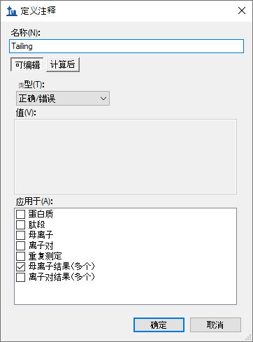
现在保存注释，并执行以下操作将其添加到您的文档中：
文档设置表单现在应显示如下：
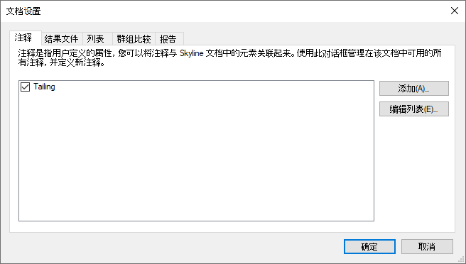
新的 Tailing 列不会出现在结果网格的自定义视图中，但您可以进行添加：
自定义报告表单现在将显示如下：
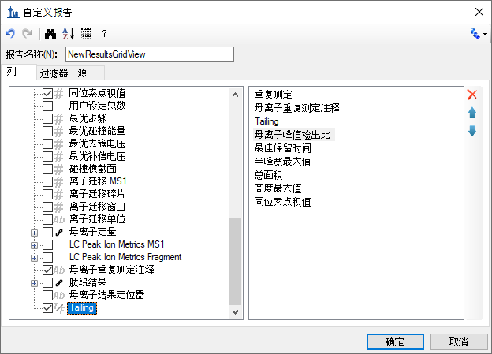
您应当会看到新的 Tailing 列已添加到母离子重复测定注释和母离子峰值检出比之间的结果网格中。
Skyline 窗口现在将显示如下：
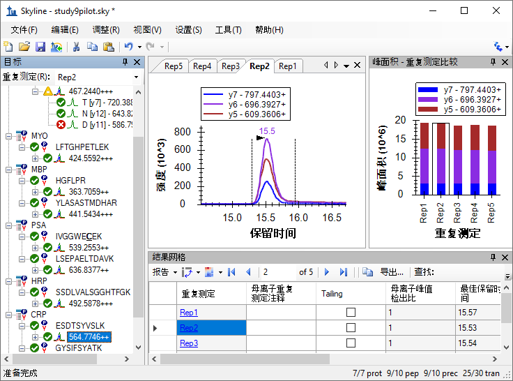
本文档中的峰问题不大，但这一个确实有一些峰拖尾。选中“Rep1”行的新 Tailing 列对应的复选框。将所选选项依次更改为其他 5 行中的每一行。确定是否需要注意拖尾，如果您认为需要注意，请勾选复选框。更改母离子树中选定的项目，然后返回到“564.7746++”母离子，验证您的更改是否进行了记录。
现在可以在 Skyline 自定义报告中导出新的 Tailing 注释。它将显示在母离子结果字段组中。
本教程介绍了 Skyline 为获取您的 Skyline 靶向质谱文档相关联的大量值而提供的灵活自定义报告。无论是在 Skyline 中进行数据分析，还是使用 Excel 或用 R、Matlab、Java 或 C++ 编写的自定义程序进行更复杂的统计分析，都可以很便利地运用这些报告。您已经了解了这些报告模板提供的汇总统计数据，它们可以作为数据质量的快速指标。您可以与合作者共享自定义报告模板，也可以将它作为出版物中的补充材料，帮助其他人使用来自不同仪器的新数据集再现您的分析，充分利用 Skyline 的多供应商支持功能。最后，您了解了如何使用 Skyline 结果网格即时获取 Skyline 报告中的许多可用值，以及如何使用自定义注释来向文档添加丰富的新信息。如果您之前不了解这些功能，那么这些功能肯定可以增加您用 Skyline 开展的实验范围。
Skyline 本身就提供了有关可用列的描述。如果将鼠标悬停在文档网格或结果网格中的某一列上，将出现对该列进行说明的工具提示。此外，在自定义报告表单中的工具栏上有一个按钮，单击该按钮将显示描述每个列的页面，单击帮助>文档>报告也可以访问该页面。
您可以对行分组，然后对它们执行统计。有关使用此功能的一些示例，请参阅本页：